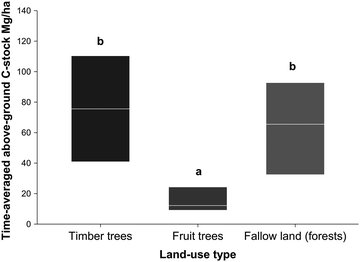

3.1 A General Perspective on Hydrological Components and Matter Related Processes1
For many centuries soil and water have been the backbone of Southeast Asia’s very productive agrarian economy. However, over the last few decades mountainous mainland Southeast Asia (MMSEA) has experienced a tremendous increase in human activity within its ecosystems, most often linked to land use change and silvicultural or agricultural intensification. The drivers of this increased activity were introduced in Chap. 1 and include population growth, changes in policies, technological innovations and economic development, activities that frequently result in changes to water and matter cycling processes, meaning that fluxes of water and matter are altered and the rank order of processes is shifted, initiating changes in system states. Here, one important state variable is soil organic carbon (C) stocks, which can become depleted; for example, in response to topsoil erosion. This chapter seeks to highlight some general regional and site-specific aspects of water and matter dynamics (Sect. 3.1), plus give an overview of the climatic and hydrologic conditions that exist in the areas investigated by the Uplands Program, beyond the physiographic and socio-economic site descriptions given in Chap. 1 (Sect. 3.2). The text also introduces the reader to four case studies related to water and matter research conducted during the course of the project (Sects. 3.3, 3.4, 3.5, and 3.6). These case studies deal with flooding and flood risk mitigation (Case Study 1), sediment and nutrient redistribution through erosion, reservoir management and irrigation practices (Case Study 2), the dynamics of field to watershed scale C stocks (Case Study 3), and the fate of pesticides in agro-ecosystems (Case Study 4).
Ecosystem vulnerability: Specific to the ecosystems in MMSEA is the frequent typhoons and the monsoonal rainfall variability that occur, and especially the high rainfall intensities that take place at the onset of the monsoon season. This rainfall often hits the uncovered soil surfaces of arable land, land which has dried during the antecedent dry season (Sect. 3.2). These high rainfall intensities often occur on steep slopes, those which supply water and matter at high energy levels, leading to significant down-slope movement. As a consequence, soils in these areas are naturally prone to erosion (see Chap. 2). Furthermore, fast mineralization rates cause nutrients to be mainly stored in living plants and in the thin and highly erodible litter layer covering the topsoil (Sidle et al. 2006). Referring mainly to rainfed arable sloping land, soil organic matter (SOM) stabilizes soil aggregates and enables the quick infiltration of rainfall; however, such soils are subject to rapid mineralization due to high temperatures and prolonged and high soil moisture content during the wet season. This situation causes a breakdown of soil aggregates and increases surface run-off, eroding the topsoil through rill and gully erosion. Schultze (1995) discussed tropical wet-dry climates such as those in the study areas, saying that they display the highest geomorphic process intensities among the world’s ecosystems. In effect, this situation offers the potential for a wide range of human induced as well as natural disturbances to become an integral part of such ecosystems, and this needs to be considered when defining environmental sustainability. And so, Chang (1993) details these environments in Asia’s humid tropics with soil erosion rates exceeding that of any other region in the world.
Environmental sustainability and unbalanced competitive relationships: To stay with the example of soil erosion on steep and permanent arable land, the problem is that soil erosion rates exceed soil formation through bedrock weathering. This unbalanced situation leads to an unsteady state in terms of resource stocks and the local material balance, as the resulting incoming and outgoing fluxes differ. So, as soon as human activities initialize considerable erosion processes, the systems will change towards a new steady state. A good example is the intensification of maize (Zea mays) and cassava (Manihot esculenta) monoculture on steep slopes in north-western Vietnam, which has resulted in an irreversible loss of soil resources and associated nutrients in the uplands, and a subsequent inability to generate an income. Estimates from a short-term monitoring experiment performed by the Uplands Program revealed erosion rates in mountainous north-western Vietnam of up to 130 tons per hectare per year (see Chap. 2), meaning soils were truncated through surface erosion by a maximum of about 1.1 cm per year, given a bulk density of 1.2 g per cm3 of soil. Consequently, the ultimate abandoning of agricultural land is likely to take place in a matter of a few decades, without even considering the more extreme storm events that occur over the long-term and that were not captured by this study.
Requirements of biophysical knowledge for resource management: Given this example, the need to conserve upland resources over the long-term calls for land and water management strategies to be introduced at both the political and farm levels. These levels typically meet at the watershed scale, a scale where solutions to sustainable resource use are sought and; therefore, where matter and water related processes are often investigated (Neef and Thomas 2009). One key question posed by many studies driven by the issue of appropriate resource care is: How do human activities impact ecosystems? Answers to this question require three linked components of understanding to be in place: (1) the complex interplay of biophysical processes on hill slopes, which often involve non-linear mechanisms such as thresholds and storage effects, (2) knowledge on how these processes are scaled and connected throughout the catchment (e.g., Collins and Walling 2004), and (3) through which process combinations – defined hereafter as process domains – specific sites and land uses are governed. Tables 3.1 and 3.2 depict these components with regard to hydrologic response, soil erosion, landslides and matter export. The following aspects illustrate the necessity of having this integrated understanding in place, in order to overcome constraints in the management of natural resources.
Watershed scale complexity and multiple modes of adjustment: One difficulty in describing water and matter related processes at the catchment scale arises from the complex and non-linear nature of watersheds (Table 3.1). Ecosystems at the watershed scale often contain many interfering variables – or to use a statistical term – too many degrees of freedom. This means that given similar initial conditions and process dynamics, there are multiple states to which an ecosystem may adjust (Phillips 2003). From the field researchers point of view, the same system output information can be evoked by different process combinations and intensities, and as a result, physically based and spatially distributed models that aim to describe detailed water and matter flows at the watershed scale often fail (Beven 2001) when tested for site to site transferability or tested against the knowledge of the field researcher (Seibert and McDonnell 2002; Vaché and McDonnell 2006). The ability of watersheds to adjust into multiple possible system states given the same processes often ends up with virtually contradictory results when comparing sites, scales and different studies, without knowledge of how hill slope scale processes are integrated to form the watershed scale response. This has the potential to impair sustainable resource management strategies and consequently calls for further research to be undertaken to understand the scaling and connectivity of processes – from field plots to slopes and watersheds. Furthermore, non-linear mechanisms need a focus, such as the threshold behavior of landslide initiation (Ziegler et al. 2009), or time lags in the response of watershed scale sediment delivery to hill slope scale soil erosion or soil conservation measures (Chappell 1983; Bruijnzeel 2004).
Validity limits of process domains: Another issue complicating the discussion of water management strategies is that of concepts, those that picture complex process combinations. Among these, the sponge concept (Calder 2002) states that tree roots, forest litter and undisturbed soil under the forest are responsible for high water infiltration rates that, in effect, can cause a more sustained response in stream discharge (Table 3.2). In contrast, increased soil disturbance and soil compaction (leading to an absence of the sponge effect), clearly increases the speed of water flow into streams. While this concept has a physical basis, the range and scale of conditions to which it applies need to be taken into account. During extreme flood events, with soils already wetted, other physiographic parameters govern the timing and amount of water discharge from a watershed. Among these are the water storage capacities of soils (Bruijnzeel 2004), the stream channel geometry (Ziegler et al. 2009) and with increasing scale, also the routing of flood waves through the river network, including reservoir management (see Sect. 3.3).
Suitability of proxies for process domains: A second example of the difficulty to be found in describing process domains is based on a process combination similar to top soil erosion from permanent arable land, a scenario which can also be found within mountainous deciduous forests. These forests are defoliated at the onset of the monsoon season, which often starts with highly erosive rainfall events. At this time, soils below the defoliated canopies have no or reduced ground cover, made worse when soil surface litter layers and the understorey have also been removed by human activities. This situation can also lead to severe erosion under forest cover (personal observation by the authors in Pang Ma Pha District, Thailand, 2011) and suggests that land use classes should be reviewed critically as proxies for process domains (Table 3.2), particularly when discussing resource conservation strategies.
Case studies: The case studies in this chapter exemplify the concerns raised about natural resource management with regard to water, nutrients and synthetic agrochemicals. A more integrated view on floods and risk management is shown in Case Study 1, which focuses on the issue of reservoir management and the problem of maximizing the water available for dry-season irrigation, whilst minimizing the risk of flooding caused by late season storms, plus on how people’s perceptions relate to the scientific view on the causes of floods and the opportunities for flood risk mitigation (Schad et al. 2012). Closely linked to flooding and reservoir management, Case Study 2 analyzes the upland-lowland run-off components of water, the corresponding nutrient and sediment reallocation and delivery pathways, and the impact of these on agronomic management (Schmitter et al. 2010, 2011, 2012). While Case Study 2 infers upland lowland nutrient fluxes, Case Study 3 investigates C stocks on a range of scales and land use types (LUTs), to reveal a basis for C management (see also Chap. 2). To add to nutrient stocks and flows in response to land use intensification, Case Study 4 investigates the fate of pesticides under intensified highland agriculture regimes, and identifies the pathways taken by pesticide residues from the fields to stream waters at the catchment scale.
3.2 The Study Sites2
3.2.1 Local Climate
The main Uplands Program research sites (in Thailand, Mae Sa and Bor Krai, and in Vietnam, Chieng Koi and Muong Lum) are located in the outer tropics of the northern hemisphere (see Chap. 1). A common way to describe the climate characteristic of a location in a graphical way is to use the so-called Walter-Lieth diagram (Walter and Lieth 1964) (Fig. 3.1). In a Walter-Lieth diagram, monthly air temperature and precipitation averages are plotted against the months of the year. For sites located in the northern hemisphere, the diagram starts with January in the left corner of the diagram, while for sites south of the Equator, the diagram starts with July; therefore, the astronomic summer is always shown in the middle of the diagram. Air temperature is plotted on the left y-axis, and precipitation is plotted on the right y-axis. Both y-axes are scaled in such a way that 20 mm of monthly precipitation are equal to 10 °C average air temperature. If the precipitation curve falls below the temperature curve, the space between both curves is shown in red, indicating a dry season. In the opposite case, where the precipitation curve lies above the temperature curve, vertical blue lines are used in the space between the curves to indicate a wet season. In the case of a particularly wet period, during which time monthly precipitation exceeds 100 mm, the area between the precipitation curve and the 100 mm threshold is shown in blue.
Fig. 3.1
Walter-Lieth diagrams for the main Uplands Program research sites; black numbers on the temperature scale represent the mean daily minimum and maximum temperatures during the coldest and warmest months respectively
All four of the main Uplands Program research sites show a typical seasonal tropical climate pattern, with summer rains (Fig. 3.1). All of the sites show a double peak in terms of rainfall and a pronounced dry period between November and March. The summer rains typically start in March/April with the onset of the monsoon circulation. At the Thai study sites, precipitation peaks for the first time in May, while at the Vietnamese sites rainfall peaks for the first time about 1 month later. The second precipitation peak occurs for all sites in September, as caused by tropical storms and cyclones. The stations in Thailand experience a more pronounced precipitation peak at the start of the monsoon, and in Thailand also, air temperature reaches its maximum at the end of the dry season then declines during the course of the wet season. In contrast, at both the Vietnamese sites, the highest temperatures are reached during the summer period (wet season) and the lowest temperatures during the dry season from November until the end of March. Among the four sites, Chieng Koi is the driest and hottest, while Muong Lum stays wetter and cooler during the dry season, meaning that the water deficit here is less pronounced (less arid, smaller red dotted area).
3.2.2 Hydrological Characterization of the Mae Sa Watershed
The upper part of Mae Sa watershed is located north-west of Chiang Mai (in northern Thailand) and covers a total area of 77 km2 (Fig. 3.2). Within the framework of the Uplands Program, in total three gauging stations were installed and operated; the station in Mae Sa Noi being built during the second phase of the Program – to be used for studies into the transportation of pesticides at the hill slope scale (Kahl et al. 2007, 2008, 2010). The station was operated between 2004 and 2011 and sampled discharges taken from the upper part of the Mae Sa Noi sub-basin (7 km2). The two other stations – Pha Muang at the outlet of the watershed and Pong Yaeng at the headwater area, came into operation at the beginning of the third phase of the Program in 2007, and ran until the end of 2011. The Pong Yaeng station measured over an area of 22 km2.
Fig. 3.2
The Mae Sa watershed with its three gauging stations: Pong Yaeng (headwater), Mae Sa Noi and Pha Mong (Mae Sa outlet)
The altitude within the Mae Sa watershed ranges from 350 to 1,540 m above sea level (m.a.s.l.) In particular the headwater and Mae Sa Noi sub-catchments are characterized by steep slopes and narrow valleys, while on the watershed scale, the average slope is 36 %. Soils within the watershed consist mainly of Acrisols and Cambisols, which have a highly developed macropore network (Schuler 2008). Within the watershed, about 24 % of the area is used for agriculture and settlements, while the remainder is covered with deciduous primary and secondary forest. The agricultural area is mostly used for the production of vegetables (e.g., cabbages, bell peppers and chayote), fruit (e.g., litchi) and flowers (e.g., Gerbera spp. and Chrysanthemum spp.). Within the headwater catchment in particular, vegetables and flowers are intensively produced in greenhouses. For more details on this see Sangchan et al. (2012).
Figure 3.3 shows the monthly mean daily discharges measured by the three gauging stations for the period 2007–2010. As with the rainfall distribution, discharges showed two maxima over the course of the year. Discharge reached its first local maximum shortly after the onset of the monsoon season, while the second maximum, which for all three stations was higher than the first, was reached in September – the peak time for tropical cyclones. The higher second maximum was the result of the ongoing replenishment of the soil water reservoir during the course of the monsoon season. The wetter the soil, the higher the potential infiltration excess, which may form overland flows and surface run-off – with more responsive run-off formation, while the intensity of the seasonal discharge variability is in general inversely related to the watershed area. The smallest watershed (the Mae Sa Noi sub-basin), showed the most pronounced double-peak in discharge, and discharge minimum was reached early in the middle of the dry season, while at the outlet station discharge minimum was determined 3 months later, at the end of the dry season. The flashy response of the Mae Sa Noi sub-basin was also very pronounced, as shown by the flow duration curves depicted in Fig. 3.4.
Fig. 3.3
Log-scaled monthly statistics of mean daily discharges for the gauging stations within the Mae Sa watershed between 2007 and 2010. The graphs show the medians (crossbars), the interquartile ranges (boxes) and the overall ranges (whiskers)
Fig. 3.4
Flow duration curves for the gauging stations within the Mae Sa watershed. Curves were derived from discharge data for the years 2007–2010
Figure 3.4 shows that while for the Mae Sa and Headwater station the double-logarithmic plots of mean specific discharge versus percentage of time followed a similar line, for the Mae Sa Noi sub-basin the slope was much steeper, in the range below Q50, indicating a more uneven discharge distribution during high-flow conditions. In contrast, discharge at the Mae Sa Noi flume showed nearly no variation during low-flow conditions (discharge < Q50). During these periods each year, the stream was fed by a low but continuous groundwater flow.
Figure 3.5 shows the relationship between stream discharge (Q) and its derivative with respect to time (dQ/dt) for the three gauging stations. In the idealized case that a watershed consists of only a single reservoir which empties in a linear manner, the relation between both variables can be described by the following ordinary differential equation:
Fig. 3.5
Relationship between flow (Q) and its derivative (dQ/dt) during recession periods for the three gauging stations in the Mae Sa watershed (2007–2010). The grey line depicts the recession of a simple linear storage reservoir (for details, see text). Recession periods are defined as periods of continuously decreasing flow, such that Q(t = t
0
−3) > Q(t = t
0
−2) > Q(t = t
0
−1) > Q(t = t
0
) > Q(t = t
0
+ 1) > Q(t = t
0
+ 2) > Q(t = t
0
+ 3)
(3.1)
Here, b (1) equals unity and a (1/d) is the recession coefficient. Such an idealized situation can be described in the easiest way using the picture of a bucket filled with water. Imagine that the bucket is equipped with a valve at its bottom. If one opens the valve, at the very beginning water will flow very quickly out of the bucket; however, as time passes, the flow of water will continuously decline until the reservoir is empty. Under such simple conditions, plotting a log (−dQ/dt) versus log Q results in a straight line with a slope of unity (b = 1). Thus, the more you open the valve, the more quickly the water will drain out of the bucket. This effect is taken into account in (3.1) by the parameter a. The greater the value of a, the faster the water drains out of the bucket. Raising or lowering the opening of the valve shifts the grey line in Fig. 3.5 up and down in parallel.
Stream flow recessions need to be interpreted cautiously, particularly when inferring the underlying hydrological flow components. Most frequently slope and curvature of recession branches are used to obtain insights into watershed behavior. As might be expected, real watersheds do not follow the simple model of a single linear reservoir. In all three catchments, the slope of the recession branches plotted in a double-logarithmic way was much steeper than unity, pointing either to a strong non-linear recession behavior or a combination of linear reservoirs, as discussed by Clark et al. (2009) (Fig. 3.5), meaning that: (a) with less curvature, but with a generally steep slope for the recession branches (i.e., a more constant but rapid change in recession with decreasing flow), the headwater station displayed the behavior of a system of direct flow discharges that quickly depleted surface and subsurface water storages, and with stream water levels quickly reverting to pre-event conditions, (b) the Mae Sa Noi watershed displayed large scatter in the recession curves, pointing towards a wide range of distinct storm events. However, an overall linear behavior was shown at the beginning of the recession curves, while the almost vertical lower parts of the recession curves indicated an abrupt change in the hydrograph, when approaching baseflow situations. This observation coincides with the observation made in Mae Sa Noi, where a responsive overland flow component combined with an almost constantly discharging baseflow component. And (c) compared to the headwater station, the Mae Sa outlet showed a stronger convex curvature of recession branches, with discharge decreasing more slowly during high flow recession periods. This suggests a combination of flow components with distinct recession behavior at the larger catchment scale, and a more subdued lower catchment area closer to the gauging station and the more responsive headwater station. This curvature could also have been an effect of stream network integration, where the flood wave became flattened and temporally extended with increasing scale, with the result that discharge receded more slowly at the beginning of the recession period.
3.3 Watershed Responsiveness, Water Retention and Dam Construction: Irrigation and Flood Risk Management3
This section summarizes and reviews the key findings made from a field study we conducted (Schad et al. 2012) in a mountainous watershed of north-west Vietnam. The aim of the study was to explore and analyze the causes and impacts of an exceptional flood event that occurred in 2007. Based on an interdisciplinary research approach comprising both socio-economic and biophysical data evaluation, the emphasis of the study was to examine how local people perceived the flooding in terms of its causal relations and impact assessment, and how these perspectives related to a scientific analysis of the causes and effects of the flooding event. Finally, we identified options for the mitigation/minimization of the risk of future flood events, and also the prospects of these measures working.
The field study was conducted in the commune of Chieng Khoi, Son La province in the north-west of Vietnam (Chap. 1, Fig. 1.1). The commune is located on a mid-level plateau at an altitude of 350 m.a.s.l., and is bounded by steep karstic mountains to the south and by the valley of Yen Chau to the north. In this mountainous area, subsistence-oriented agriculture systems dominate. The flat valley plateau is exclusively used for paddy rice (Oryza sativa) cultivation, accounting for a total rice crop area of 60 ha. The peripheral upland fields on the steep hill slopes are mainly cropped with cassava and maize. Many of the rice farming systems in Chieng Khoi include fish ponds in which farmers raise fish to produce additional food and generate income. The subtropical climate (see Sect. 3.2) entails a wet season which lasts from April/May to September/October each year, and relatively dry, cold winters which run from November to April. Regarding both land use and topography, the structure of the Chieng Khoi watershed can be considered as being generally representative of the mountainous regions of northwest Vietnam (Anyusheva et al. 2012; Lamers et al. 2011; Schad et al. 2012).
In general, paddy rice cultivation uses large quantities of water, and as a rule of thumb, up to 5 m3 of running water is required to produce 1 kg of paddy rice. Taking into account the total rice crop area in Chieng Khoi commune, the entire water demand over a typical paddy rice growing season amounts to approximately 1.0 million m3. In Chieng Khoi there are two rice crop seasons per year, a spring season from February to June and a summer season from July to November. During the summer crop season, irrigation water is only provided in order to supplement rainfall, while during the spring crop season, most of the demand for water is achieved through irrigation. In order to meet the high demand for water and guarantee two rice crop seasons per year, a reservoir was built in Chieng Khoi between 1962 and 1968, damming up a stream that originates in the nearby karstic mountains. In the mid-1970s, this dam was heightened, yielding a reservoir which covers a total area of 26 ha (Schad et al. 2012).
By means of an outlet, water from the reservoir is discharged into a main concrete channel (Fig. 3.9). A common irrigation system then distributes the water, via this concrete channel and through the rice paddy cascades and fish ponds, into the natural stream. An overspill limits the maximum water level of the reservoir to 11.9 m. Typical water level patterns in the reservoir and monthly precipitation for the years 2006–2008 are depicted in Fig. 3.6.
Fig. 3.6
Water levels in the Chieng Khoi reservoir plus cumulative monthly precipitation for the years 2006, 2007 and 2008 (Modified from Schad et al. 2012)
The seasonal fluctuation of the water level in the reservoir is mainly governed by the annual precipitation pattern. During the dry season, the water level continuously declines, typically reaching a minimum in May/June. With the onset of the wet season, intensive precipitation events provoke a rapid refilling of the reservoir within a few weeks. From the middle of the wet season onwards; however, when the water level of the reservoir commonly exceeds the critical height of the overspill, unregulated run-off is triggered from the reservoir directly into the natural stream (Schad et al. 2012). The year to year differences in water level fluctuations, as depicted in Fig. 3.6, illustrate the uncertainties that water resource managers have to deal with in order to meet annual irrigation demands.
As a consequence of the public agricultural collectivization programs accomplished in the 1970s, the traditional communal water governance system underwent major changes, resulting in more pluralistic structures being developed (Neef et al. 2006). After the completion of the dam; for example, the position of Lake Manager was established in Chieng Khoi by the Provincial Department for Irrigation. Together with his co-workers, the Lake Manager has to report directly to the Provincial Department. It is worth mentioning that the lake management team; however, typically consists of the residents of places other than Chieng Khoi, and as a consequence, contact with local residents is minimal, alienating the locals from their traditional involvement in water management issues (Schad et al. 2012). The main duties and responsibilities of the Lake Manager are manifold. He regulates the discharge from the outlet of the lake, services and operates the lake’s infrastructure, and continuously adapts the water management schemes implemented in response to weather forecasts. The residents of the villages in Chieng Khoi have to pay moderate fees directly to the Provincial Department for using the irrigation water derived from the lake.
In 2007, the Chieng Khoi catchment was hit by an unprecedented and unforeseen flood event, as in early October 2007, a tropical typhoon named Lekima made landfall in Vietnam, triggering 3 days of heavy rainfall. On October 4th, the typhoon caused a rainfall event in the Chieng Khoi region lasting 36 h, with maximum intensities reaching 20 mm/h−1. It should be noted that the total amount of rain that fell during the typhoon was 166 mm, equivalent to five times the average monthly rainfall for October. During Lekima, most of the rainwater was drained from the surrounding mountains into the reservoir through surface run-off, since the soil had already been saturated due to previous rainfall. As a consequence, the water level in the reservoir rose rapidly, reaching a rate of 2.5 cm/h. It is worth noting that the Lake Manager had previously heightened the overspill during the wet season of 2006 by piling sandbags on top in order to store extra water during the next dry season. This action was triggered by the extraordinary dryness of 2006, during which time the reservoir did not refill until the end of July (Fig. 3.6). According to the Lake Manager, this activity was carried out after consultation with both the Department of Dyke Management and the Provincial Department of Irrigation (Schad et al. 2012). Unfortunately, 24 h after the onset of the typhoon, the water level in the reservoir exceeded the critical level, causing the sandbags to be flushed away and initiating an overflow. As a result of this overflow, stream discharge increased sharply within a few hours, from less than 0.5 m3 s−1 to a maximum of 45 m3 s−1 (Fig. 3.7).
Fig. 3.7
Daily and hourly precipitation, water level of the reservoir and stream discharge recorded in Chieng Khoi catchment during Typhoon Lekima (Source: Schad et al. 2012)
This combination of environmental and man-made conditions caused one of the most severe flood events within living memory in Chieng Khoi (Schad et al. 2012). Figure 3.8 shows a paddy field located slightly below the dam at the onset of the wet season and during the flood event of 2007. Shortly after the flooding occurred, an Uplands Program team and some co-workers conducted a series of structured interviews in Chieng Khoi, mainly discussing the economic consequences of the event, local responses during the flood and people’s personal views on the factors that had led to the flood (Schad et al. 2012).
Fig. 3.8
A paddy field located slightly below the dam at the onset of the rainy season (left), and during the flood event of 2007 (right) (Source: La, Nguyen, pers. communication)
Although the people we interviewed who owned a TV said they had heard about the typhoon and the intensive rainfall in the daily weather forecast at least 1 day in advance, the flooding itself took people by surprise, as most people underestimated the severe weather alert. They told the team that due to the fact that diverse weather is typical for northern Vietnam, they often do not expect the weather forecast to be that precise, though they attributed the flood event to general weather changes that had been observed in the area in terms of rainfall patterns and frequencies over the previous decade (Schad et al. 2012).
The abrupt onset of the flood prevented local people from taking action aimed at reducing the spread and penetration of the floodwaters through the use of flood prevention measures. In the end, emergency interventions were limited to protecting public infrastructure such as bridges or community houses. Shortly after the flood had passed, the communal people’s committee initiated reconstruction work on the public infrastructure, and as a result, each household in Chieng Khoi had to contribute one person for this task (Schad et al. 2012).
The direct agro-environmental impacts of the flood were diverse. Both the breaking of fishpond dykes by the flood and the washing over of neighboring ponds resulted in the significant loss of farmed fish. Rice plants in the paddy fields close to the river were severely damaged, and the flood also demolished irrigation channels. A field study conducted by Schmitter et al. (2010) indicated that during the summer crop season the rice yields obtained from the flooded paddies were down by 5 % when compared to those during the earlier spring season. For a more detailed summary of the impacts of the flood on rice cultivation, soil fertility parameters and sedimentation processes, among others, please refer to Sect. 3.4.
Farmers’ responses during the interviews indicated that, at least at the household level, the flooding only had a limited impact economically in terms of income and consumption. If at all, most of the damage occurred to agricultural production activities; fisheries in particular. Those farmers directly affected by the flood spoke of an average loss of 5 % of their annual cash income. Given the strength of the flood, the economic consequences appear to have been surprisingly low at first glance. One explanation for this is that the typhoon occurred shortly after most farmers had already harvested their maize fields, for, since maize is by far the most important source of cash income in Chieng Khoi, it would have caused much more significant losses if it had occurred a few weeks earlier (Schad et al. 2012). In contrast to these findings at the household level, the official damage report published by the commune and district departments stated that significant damage had been caused to public infrastructure also (Yen Chau People’s Committee 2007).
So, what triggered the flood from the local people’s point of view? Most of the interviewed residents attributed the flood to both environmental conditions and mismanagement. According to the farmers, the absorption capacity of the soil has significantly decreased over recent decades, due to intensive deforestation. As a result, enhanced surface run-off is triggered during intensive rain events, leading to a more rapid filling of the reservoir and diminishing the reservoir’s buffer capacity. Furthermore, most farmers in Chieng Khoi attributed in part responsibility for the flooding to mismanagement on behalf of the Lake Manager. The farmers charged the Lake Manager with not having followed the weather forecast strictly and hence, of not increasing the buffer capacity of the lake prior to the typhoon. The Lake Manager, in contrast, attributed the flooding to the construction of fish ponds close to the river, saying that this had led to an artificial river channel limiting the rivers’ capability to discharge large amounts of water. Another important factor addressed by both the Lake Manager and the commune officials was the increasing sediment accumulation in the lake, leading to a reduction in the lake’s buffer capacity (Schad et al. 2012). However, during an interview, the Lake Manager gave a more fatalistic view of the flood mitigation measures taken, saying “Every year, the commune announces a plan to prevent flooding, but when heavy rain arrives you can forget about the plan; we cannot do anything” (the Lake Manager, as cited in Schad et al. 2012).
Summing up, flood prevention and mitigation measures are perceived by people in the study area mainly as a public concern, rather than as an issue that individuals should and can address. The shift of local power to higher levels in particular has reduced the accountability of local people in terms of water governance, and induced a withdrawal of local residents from community action. Neef and Thomas (2009) pointed out that payment for environmental service schemes, whereby downstream residents compensate upstream land managers for their flood mitigation efforts, may be a promising tool and a step forward with respect to raising the motivation of farmers to establish soil conservation measures on sloping land. This field study reveals that information and training on soil-water interdependencies, as well as the disclosure of important information among stakeholders, are prerequisites for appropriate flood responses at the institutional and practical level. Furthermore, decision-makers need to understand how local residents go about developing their own causal explanations of flood events, rather than developing mitigation strategies based solely on expert findings and narrow hierarchical structures and economic constraints (Schad et al. 2012). Although structural measures, such as dams or overspills, are crucial in preventing floods and diminishing their adverse impacts, they alone are not effective future flood mitigation strategies. Rather, structural measures should be carefully combined with non-structural measures such as community based zoning in flood-prone areas and the development of land use plans, those that build on both expert and local knowledge (Schad et al. 2012).
3.4 The Impact of Reservoir Management on Nutrient Redistribution to Irrigated Lowlands4
Erosion and landslides on steep slopes are a common problem in intensively farmed Southeast Asian mountainous headwater systems, and create tremendous sediment fluxes. Globally, 197 Tg of particulate organic C and 30 Tg of particulate nitrogen (N) is transported through rivers on a yearly basis, from which the Asian river network contributes up to 50 % (Beusen et al. 2005). The effect of upland intensification on downstream areas is complex, due to: (1) matter reallocation as a result of non-linear and scale-dependent biophysical processes. Flux estimations of sediment associated nutrients have a high spatio-temporal variability at the catchment scale, as they integrate various biochemical and biophysical processes (King and Harmel 2003; Gao 2008), (2) land use intensification and socio-economic policies, as well as linear features (e.g., roads, footpaths and canals), stimulating erosion processes and conveying sediments in tropical mountainous regions throughout Southeast Asia (Ziegler et al. 2000, 2004), and (3) reservoirs and irrigation channels being constructed throughout the area in order to support rice intensification during the dry season. These anthropogenic changes alter the natural water regimes in mountainous areas significantly, and can be expected to contribute to the reallocation of C and N, as they capture and transport the overland flow from intensified upland areas. Reservoirs acting as a sediment trap are a known phenomenon, and after the construction of reservoirs in Hoa Binh and Thac Ba in northern Vietnam, sediment delivery to the Red River delta was found to decrease by between 56 % and 74 %. It was also estimated that an additional 20 % decrease would occur if two more reservoirs were to be constructed (Le et al. 2007). As a result, reservoir management, especially for irrigation purposes, influences the fraction and timing of sediment associated nutrients released to lowland cropping areas. The following case study describes sediment redistribution within the landscape and its effects on downstream rice production areas, as influenced by irrigation networks (Schmitter et al. 2010, 2011, 2012).
3.4.1 The Influence of a Reservoir on Irrigated Nutrient Loads
An assessment of C and N reallocation was performed within a sub-catchment of the Chieng Khoi watershed, which has an irrigation reservoir with a capacity of 1 × 106 m3. As mentioned earlier, irrigation management is performed through the manual operation of a gate at the bottom of the reservoir, and the drainage area of 490 ha upstream of the reservoir consists of steep cultivated upland which is mainly cultivated with maize and cassava. A second part of the sub-catchment, with an area of 17 ha and also consisting of steep cultivated land, is located downstream of the reservoir and drains directly into the irrigation channel (Fig. 3.9). The monitored irrigation channel provides year-round water to 6.5 ha of paddy fields. The river within the lowland areas of the catchment is mainly fed by run-off, interflow and baseflow from irrigated rice fields and fish ponds. From July to September, when the buffer capacity in the reservoir is exceeded, reservoir spillover also feeds the river. Due to their limited storage capacity, irrigation reservoirs can cause hazards as a result of rainfall variability and irrigation management practices during the monsoon season (see also Sect. 3.3). Particularly during the monsoon season, a sequence of heavy rainfall events followed by a typhoon can trigger floods, as water release cannot be controlled once spillover is activated. This study monitored discharges released from the reservoir and at the sub-catchment outlet during the wet season of 2008, and also analyzed total organic C and total N content (i.e., particulate and dissolved fraction) during several rainfall events which produced a wide range of rainfall intensities and magnitudes (Schmitter et al. 2012).
Fig. 3.9
Detailed overview of the study area, with the position of the gauging stations (triangle and circle) (Schmitter et al. 2012)
3.4.2 Importance of Reservoir Management and Its Impact on Carbon and Nitrogen Redistribution
During our study, in the absence of rainfall, the water in the reservoir contained on average 4.7 ± 1.2 mg L−1 organic C and 3.8 ± 1.6 mg L−1 total N. The low C/N ratios observed in the reservoir (±2) were most likely the result of in situ production of C and N during decomposition, as aquatic plants are much lower in C when compared to terrestrial plants (Beusen et al. 2005) leading also to an accumulation of mineral N, such as NH4
+. However, during rainfall events, measured concentrations at the outlet of the sub-catchment rose rapidly, and values up to 311.4 mg L−1 organic C and 52.6 mg L−1 total N were found. The increase in such concentrations during rainfall events showed a high variability (Fig. 3.10), and a combined analysis of the pollutograph and hydrograph profiles at both gauges indicated the presence of non-point sediment sources along the irrigation channel, which increased loads in the irrigation water. This was also reflected in changes to the organic C/N ratios at the outlet, which increased during rainfall events to a value of 7, as compared to a value of 2 for water from the reservoir.
Fig. 3.10
Box plots of organic C and total N concentrations (mg l−1) for all 25 events monitored at the channel inlet (i.e., reservoir outlet, top) and channel outlet (outlet of the sub-catchment, bottom) with crossbars, boxes and whiskers giving the median, interquartile range and overall ranges respectively. The vertical bars at the top represent total rainfall (mm) (Modified after Schmitter et al. 2012)
Fluctuations in organic C and N concentrations in the irrigation channel were highly dependent on the intensity and magnitude of rainfall, the presence of antecedent dry weather periods and on the amount of irrigation water released from the reservoir – including as a result of operational management decisions made during events (i.e., changes in water regimes). A decrease in water released from the reservoir during rainfall events did result in higher C and N concentrations in the irrigation channel when compared to similar events when more water was released from the reservoir.
A quantification of the several contributory water sources (i.e., reservoir and overland run-off) and their water quality allowed for the estimation of nutrient loads irrigated to the paddy fields. On the basis of the estimated irrigation amounts and the water quality of the irrigation water in the channel, irrigated loads were estimated for rainfall events. These loads were then compared with calculated irrigated loads in the absence of rainfall events (i.e., irrigated baseline loads). For these baseline loads, the water quality in the irrigation channel at the onset of the rain was used. Comparing both loads enabled the identification of rainfall induced load contributions, i.e., loads from overland flows, which showed a significant contribution to nutrient loads irrigated to the paddies (Fig. 3.11). Over the measured events, an additional organic C load of 406 kg and total N load of 56 kg was irrigated into the paddy fields as compared to the total irrigated baseline loads, showing the event scale impact of rainfall and irrigation management on irrigated nutrient loads.
Fig. 3.11
Estimated cumulative irrigated loads to paddy fields (kg) during 25 monitored rainfall events (full line), and the baseline load (dotted line) for organic C (top) and total N (bottom). The baseline load was calculated based on average C and N concentrations in the irrigation water prior to a given rainfall event. The stacked bars represent the total amount of rainfall (mm) within each measured event
In a next step, rainfall intensity, overland flow, irrigation discharge and water levels in the reservoir were used to estimate irrigation loads over the entire period, from May to September, using multiple linear regression. Over this period, rainfall contributed up to 7 % of the overall irrigated organic C loads and 1.8 % to the total N loads. The model predicted a total irrigated load of 5.5 Mg of organic C and 4.6 Mg of total N to the paddy fields. Given the irrigated paddy area of 6.5 ha, this prediction resulted in an additional spatially averaged load of 0.85 Mg ha−1 organic C and 0.70 Mg ha−1 total N (Schmitter et al. 2012), while the management and water quality of the reservoir accounted for up to 93 % of the overall irrigated loads. The reservoir normally captures the overland flow of organic C and N from the surrounding, intensively cultivated 490 ha area and releases it throughout the year through irrigation to the paddy area. As such, the reservoir acts as a sediment filter and, depending on reservoir management practices, changes the timing and fingerprint of nutrient allocation to the rice fields.
3.4.3 Impact of Matter Reallocation on Lowland Soil Fertility and Crop Production
In intensively cultivated areas, nutrient losses in one part of a catchment can lead to gains elsewhere (Fig. 3.12). This is often the case in mountainous regions where there is a strong linkage between upland erosion processes and lowland deposition areas. As shown in Sect. 3.4.2, significant loads of organic C and total N are irrigated to paddy fields in the study area during the wet season, and these loads are likely to increase further on a yearly basis as spring crops are cultivated between February and May/June – the dry period when the water supply is solely based on irrigation from the reservoir. Nutrients can be trapped within paddy fields, as identified by Yan et al. (2011), or removed to surrounding water bodies by internal run-off-deposition processes during land preparation and storm events (Kim et al. 2006; Maruyama et al. 2008; Zhao et al. 2009). Sediment associated nutrient reallocation takes place through various pathways and depends on biophysical characteristics, those that influence the travel time and deposition rate of the material (Gao et al. 2007; Mingzhou et al. 2007). The spatial variability of soils in response to sedimentation processes is a combined result of land management practices (e.g., plowing) and long distance catchment processes such as irrigation and erosion. Spatial variations in soil properties in turn affect crop productivity. The question remains as to how the dynamic process of material reallocation triggers soil spatial variability, besides the intrinsic soil properties that are related to the geomorphology of a catchment. In relation to the spatial variation in crop production levels, additional factors play a role, such as field preparation, fertilizer application and water management. All these factors also influence nutrient depletion and enrichment.
Fig. 3.12
Deposition of sediment transported by direct run-off from eroded upland fields (left), and a rice topo-sequence monitored within the study (right)
Schmitter et al. (2010, 2011) investigated the sediment delivery pathways by monitoring several irrigated paddy rice topo-sequences during a dry and a wet season. Besides irrigation water, two more sediment delivery pathways were identified: (1) direct run-off from upland areas, and (2) flooding from the neighboring river. The latter pathway only occurred during typhoon Lekima (see Sect. 3.3). The study investigated the physical and chemical soil properties (including particle size, organic C and total N, P, K and CEC) of the topsoil found in the paddy fields, as a function of the sediment delivery pathway. Any linkage between the alterations in spatial variation and rice performance was assessed using multiple linear regression on all the data with regard to topsoil properties and yield indicators (i.e., grain yield, biomass).
The positive gain in irrigated C and N loads was confirmed by physical and chemical topsoil analysis. Topsoil organic C and total N contents displayed a spatial gradient, with nutrient enrichment increasing with distance from the irrigation channel (Fig. 3.13). The opposite enrichment pattern was found for the sand fraction along these fields, as coarser, less nutrient rich sediments were deposited closer to the irrigation channel as a function of settling velocity (Schmitter et al. 2010). Similar observations were found for the paddies that received direct run-off from the upland fields, as these sediments were found to be lower in organic C and N content and had a higher sand fraction. With regards to the delivery pathway ‘flooding’, a depletion of organic C and N and an enrichment of sand contents were found for all the flooded fields. The typhoon floods decreased organic C content in the topsoil by 24 % due to deposits rich in sand. An analysis of the particle size distribution of these topsoils confirmed these results, as 41 % more sand was found in these fields (Schad et al. 2012). As extreme events are predicted to increase in the future, these findings point towards the sensitivity of lowland rice production systems in terms of soil degradation due to unfertile sediment deposits.
Fig. 3.13
Effects of irrigation and flooding on changes in the topsoil organic C content of paddy rice cascades in 2007. The black dots represent the organic C status before planting (Organic C = 1.72 + 0.02distance–2.00E-04distance2, R2
adj = 0.45, p < 0.0001) while the status of organic C after harvest is given by the grey dots (Organic C = 1.77 + 3.37E-03distance–3.00E-04distance2, R2
adj = 0.44, p < 0.0001). Flooded paddy fields were located at a distance between 100 and 120 m from the irrigation channel (circle) (Modified after Schmitter et al. 2010)
Grain yields within the monitored fields corresponded very well with the enrichment/depletion patterns for soil organic C, total N and sand found within the lowland topsoil. The actual yearly addition of N and organic C to the paddy fields remains an unknown factor, as trapping efficiency within the paddies was not captured in this study. The agronomic effects of sediments in the paddy fields; however, depends a lot on the particulate form of the delivered organic matter, where it is deposited and the mineralization processes and losses in the paddy fields – which are highly dependent on fertilizer and water management practices (Li et al. 2010). Therefore, both sediment quality and the identification of the sediment delivery pathway play a major role in understanding crop performance patterns in downstream catchments, and for developing site-specific fertilizer recommendations.
Current recommendations in the area do not account for the various nutrient inputs entering the system through irrigation or flooding, which has been shown by this study to influence soil fertility and crop productivity. Site-specific fertilizer recommendations are complex as N mineralization-immobilization is highly dependent on land management, flooding and weather conditions. Nevertheless, the rate of adoption of specific nutrient management strategies will depend a lot on the economic benefits they bring and the associated risks, as confirmed by several participatory workshops held with the study area rice farmers. This would mean that for those irrigated paddy fields in the study with a low flood risk, farmers will be willing to reduce fertilizer consumption if the current system is proven to be sustainable and if severe drought risks are not present. In contrast, for fields prone to flooding, farmers will tend to reduce the risk of yield losses and; therefore, be hesitant to adopt innovative fertilizer management strategies. The continuous decrease of organic C and total N content in flooded fields is likely to become a serious threat to the sustainability of the system, and so the negative impact on lowland soil fertility and productivity clearly demands for adequate soil conservation practices to be put in place in the uplands, those which will positively influence sediment reallocation to the lowlands. However, due to a lack of intrinsic motivation among local farmers, there is a need for policy makers to raise farmers’ awareness levels regarding upland-lowland linkages and the crucial role of soil conservation practices (Saint-Macary et al. 2010; Schad et al. 2012).
3.5 Dynamics of Carbon Stocks in Upland Areas5
Why bother about C stocks in upland areas? According to Craswell and Lefroy (2001), C serves many functions as a part of SOM. SOM is a reserve of N and other nutrients required by plants. It also forms stable aggregates, protects the soil surface and maintains a vast array of biological functions, including the immobilization and release of nutrients, the provision of ion exchange capacity and the storage of terrestrial C. Lal et al. (2007) indicated that soil C not only functions to mitigate climate change, but is also important in advancing food security; therefore, its depletion always leads to a degradation in soil quality and a decline in agronomic/biomass productivity.
Lal (2004) estimated the global C pool as 46,850 Pg, of which the biotic and soil C pools make up 1.2 % and 5.3 % respectively. Forests play an important role in the global C cycle, and according to the FAO (2006), global forest cover is approximately 3,952 million ha, or 30 % of the world’s land area. In Southeast Asia alone, the current total biomass C stock in forests amounts to approximately 64.2 Gt, of which 22 % is stored below-ground and 78 % above-ground (Saatchi et al. 2011).
The conversion of forest land to non-forest land; however, causes a relatively large loss of C stocks per deforested area above-ground, with negative consequences on both the global and local scales (DeFries et al. 2007; Ellison et al. 2012). Between 2000 and 2005, gross deforestation was 12.9 million ha year−1, mainly as a result of the conversion of forests to agricultural land (FAO 2006; MEA 2005). The global contribution of deforestation and the decay of biomass to C in the atmosphere is estimated to be 8.5 Gt year−1, or 17.4 % of the total anthropogenic greenhouse gas emissions (IPCC 2007). Developing countries in South and East Asia and the Middle East contributed, according to Achard et al. (2004), an annual loss of 1.7 Gt year−1 of CO2 to the atmosphere during the 1990s. Despite mitigation attempts taking place and decreases in global deforestation rates, the losses are still largest in South America, Africa and Southeast Asia.
The mountainous regions of northern Vietnam have witnessed drastic changes in land use during the last few decades. Vien et al. (2006) indicated that government development policies often seek to modernize the rural sector through the introduction of new agricultural technologies and improved marketing, without taking existing, local capacities into account. With land use intensification, these mountainous landscapes become dominated by less diverse rain-fed upland fields, wetland rice terraces, small areas of fallow vegetation and patches of secondary forest (Turkelboom et al. 2008). According to Kirschbaum et al. (2012), soil C stock changes usually occur after deforestation and lead to subsequent soil loss by erosion; however, the scale of these changes depends largely on the cropping system involved. For example, Vang Rasmussen et al. (2012) found a reduction in above-ground (ABG) C stocks in the range 4–13 Mg C ha−1 to be associated with a shift from fallow vegetation to cassava cropping. Further C loss pathways from watersheds include burning and biomass mineralization, as well as export due to harvest and the removal of plants for use as livestock fodder.
This study focuses on the C stocks (see also Chap. 2) of perennial vegetation and upland crops, and provides data on the C stocks of ten representative perennial LUTs, plus maize and cassava – the two most important uplands crops in the Chieng Khoi catchment area. It also addresses the potential for Clean Development Mechanism (CDM) measures to be used to generate income for smallholders.
3.5.1 Carbon Stocks of Perennial Vegetation
In Chieng Khoi commune (for further details of the study area, refer to Fig. 1.1 in Chap. 1), the Rapid Carbon Stock Appraisal (RaCSA) approach, one of several tools provided by the World Agroforestry Centre’s ‘Trees in multi-Use Landscapes in Southeast Asia’ (TUL-SEA) project (TUL-SEA 2010), was used to generate data on perennial biomass and related C stocks, as well as C stock changes. Figure 3.14 shows the land use pattern to be found in Chieng Khoi commune in 2007 (Zemek et al. 2009).
Fig. 3.14
Land use map of Chieng Khoi Commune in Yen Chau District, Son La province, north-west Vietnam (Zemek et al. 2009)
Ten representative perennial land-use systems were defined and surveyed using a nested sampling plot design (Fig. 3.15). Overall, 20 × 100 m2 nested sample plots were established, representing two plots per LUT. The LUTs were:(1) protected natural tropical semi-deciduous forest, (2) grazed secondary forest, and (3) bamboo forest, as well as plantations of (4) Tectona grandis, (5) Mangifera spp., (6) Dimocarpus longan, (7) Musa spp. (basjoo and paradisiaca), (8) Chukrasia tabularis, (9) Pinus massoniana, and (10) a mixed fruit tree plantation (including Artocarpus heterophyllus, Tamarindus spp., Dimocarpus longan and Mangifera indica). The survey area of the two plots per LUT comprised samples of over-, mid- and understorey vegetation, plus coarse litter, on 2 × 100 m2, 2 × 25 m2, 4 × 1 m2 and 8 × 0.25 m2 plots respectively.
Fig. 3.15
Nested sampling plot design (Ponce-Hernandez et al. 2004)
Two randomly selected nested sampling plots of 100 m2 per perennial LUT were selected to assess the ABG biomass parameters for trees, mid-, and understorey vegetation, plus coarse litter (Fig. 3.15). For all trees, >5 cm diameter at breast height (DBH), height and DBH were measured. The fresh-weights of mid- and understorey vegetation, as well as coarse litter, were determined destructively in 2 × 25 m2, 4 × 1 m2 and 8 × 0.25 m2 sub-plots per plot respectively. Subsamples were used for fresh-dry weight conversion. Samples were oven-dried at 70 °C until a constant weight was reached. For shrubs and bamboo, species-specific and allometric equations were built from measurements taken at different growth stages for height, canopy diameter, fresh and dry weight of the leaves, branches, stems and roots (Zemek 2009).
To compare the different LUTs, the obtained data were time-averaged according to the Alternatives to Slash-and-Burn Program (ASB 1999) protocol. At stand ages of 12 and 20 years, ABG C stocks for the timber and forest fallow differed significantly from fruit tree based systems, at p < 0.01 and p < 0.05 respectively (Fig. 3.16). The time-averaged C sequestration of the entire rotation decreased in the following order: protected natural forest > bamboo forest ≫ mango, secondary forest, pine, teak ≫ longan, banana, mixed fruit trees and Chukrasia tabularis. The calculated annual ABG C accumulation rates were 3.25, 0.73, 0.40 and 0.51 Mg C ha−1 for mango, longan, banana and the mixed fruit tree plantations respectively. For teak, Chukrasia tabularis and pine tree plantations, the annual C accumulation rates were 3.78, 1.96 and 6.03 Mg C ha−1 respectively. The annual C accumulation for the secondary, bamboo and protected natural forests were 1.59, 3.84 and 4.35 Mg C ha−1 respectively (Table 3.3).
Table 3.3
ABG C stocks of 10 perennial land use systems. Data were collected in the Chieng Khoi watershed in 2009
Land-use type | Rotation time (year) | Annual time-averaged C-accumulation (Mg ha−1 year−1) | Time-averaged C sequestration – entire rotation (Mg ha−1) |
|---|---|---|---|
Mango | 20 | 3.25 | 65.1 |
Longan | 20 | 0.73 | 14.6 |
Banana | 20 | 0.40 | 8.0 |
Mixed fruit trees | 20 | 0.51 | 10.1 |
Teak | 12 | 3.78 | 45.4 |
Chukrasia tabularis
| 12 | 1.96 | 23.6 |
Pine | 12 | 6.03 | 72.4 |
Protected natural forest | 50 | 4.35 | 217.5 |
Bamboo forest | 40 | 3.84 | 153.7 |
Secondary forest | 30 | 1.59 | 47.7 |

Fig. 3.16
Time-averaged total ABG C stock of 12 and 20 year-old timber, fruit tree plantations and fallow land (forests). Bars with different letters are significantly different at p ≤ 0.05 (Tukey test). A line within a bar indicates 12 year old stands, while the entire bar represents 20 years (Zemek 2009)
Changes in ABG C stocks can also have an impact on below ground (BLG) stocks. Figure 3.17 presents time-averaged and estimated ABG and BLG, plus total C-stocks for 12 year timber and fruit tree plantations. ABG and BLG C decreased in the following order: pine ≫ teak > Chukrasia tabularis > mango ≫ longan > mixed fruit tree > banana, indicating that only pine and teak trees maintained higher C amounts BLG. This decrease has consequences for a soil’s ability to withstand water induced erosion (see Chap. 7).
Fig. 3.17
Time-averaged and estimated ABG, BLG and total C stocks [Mg ha−1] for 12 year old teak, Chukrasia tabularis, pine, banana, longan, mixed fruit tree and mango plantations. Error bars show the standard deviation from the mean of the two sampling plots (Zemek 2009)
3.5.2 The Above-Ground Biomass and Carbon Stocks of Upland Crops
In the Chieng Khoi watershed, annual crop production activities are dominated by maize and cassava. Usually, maize is planted in early May with the onset of the monsoon rains then harvested in September. Cassava is also planted in May; however, it remains in the field for longer – 0.5, 1, 2 and 3 years, depending on the soil fertility status and farm household (HH) cash flow requirements. Cassava is usually grown when the soil fertility is depleted after the several maize cropping seasons, and is considered a kind of fallow crop by the farmers (Lippe et al. 2011). In addition, farmers occasionally use maize-cassava intercropping and maize-cassava based agroforestry systems during the transition from more to less fertile soils.
For this study, maize and cassava samples from several fields within the Chieng Khoi watershed were collected to assess ABG biomass and C stocks (Table 3.4). The maize fields varied in terms of their distance from the homestead, whereas the cassava fields were randomly selected based on the length of the growth cycle. There was a gradient found in terms of yield potentials and corresponding C accumulations based on increasing distance from the homesteads, which clearly mirrors the land use geography and cropping history at this site. Maize fields further away from homesteads usually have a younger cropping history and hence a higher yield potential than fields closer to homesteads (Boll et al. 2008). The total ABG biomass produced by maize varied between 11.7 and 23.4 Mg ha−1 for fields with a longer and more recent cropping history respectively. The biomass produced was equivalent to an annual C accumulation of 4.7–9.4 Mg ha−1.
Biomass (DM) (Mg ha−1) | C-accumulation (Mg ha−1 year−1) | C sequestration (entire rotation) (Mg ha−1) | ||
|---|---|---|---|---|
Maize
a
| ||||
Field 0
*
| Grain yield | 5.0 | 2.00 | 2.00 |
Total ABG | 11.7 | 4.68 | 4.68 | |
Field 500
**
| Grain yield | 4.2 | 1.68 | 1.68 |
Total ABG | 11.7 | 4.68 | 4.68 | |
Field 1000
***
| Grain | 9.7 | 3.88 | 3.88 |
Total ABG | 23.4 | 9.36 | 9.36 | |
Cassava
b
| ||||
1-year-old | Tuber yield | 4.8 | 2.24 | 2.24 |
Total ABG | 4.4 | 2.20 | 2.20 | |
Weeds | 0.9 | 0.47 | 0.47 | |
2-year-old | Tuber yield | 4.4 | 2.05 | 4.10 |
Total ABG | 5.7 | 1.43 | 2.86 | |
Weeds | 2.1 | 0.53 | 1.06 | |
3-year-old | Tuber yield | 12.2 | 1.90 | 5.69 |
Total ABG | 11.6 | 1.93 | 5.80 | |
Weeds | 2.1 | 0.34 | 1.03 | |
Cassava produced 4.4, 5.7 and 11.6 Mg ha−1 of ABG dry matter and 4.8, 4.4 and 12.2 Mg ha−1of tubers during 1, 2 and 3 years of cropping respectively, though there was no weed control applied in cassava fields as the crop is considered a fallow. Hence, an additional amount of biomass of 0.9–2.1 Mg ha−1 was collected from cassava fields. The annual ABG C accumulation in the cassava fields was 2.7, 2.0 and 2.3 Mg ha−1 in the 1-year-old, 2-year-old and 3-year-old cassava stands respectively, while C accumulations in the tubers were in the range 1.9–2.2 Mg ha−1 year−1.
The main reason for this gradient can be attributed to land use. Most of the soils in the Chieng Khoi catchment are Alisols and Luvisols, derived from sandstone, with varying soil fertility levels (see also Chap. 2). Once degraded by cultivation practices, these soils will not recover, even after more than 50 years of fallow. As a result of inappropriate land use, soils on the middle and lower slopes have been affected by severe soil erosion, whereas the foot slope soils have instead suffered from an accumulation of eroded infertile subsoil material, as well as stagnic conditions. The unsustainable land uses practiced at upslope landscape positions has had a severe impact on downslope areas, affecting the long-term productivity of these sites (Clemens et al. 2010). This has been mitigated by the introduction of new varieties and the increased application of external inputs such as fertilizers. (Lippe et al. 2011).
Maize and cassava are cash crops sold to middlemen; therefore, substantial amounts of C stored in maize grains and cassava tubers leave the catchment area after the harvest, in the range 1.68–3.88 Mg ha−1. The remaining ABG biomass is often used to feed cattle or buffaloes, representing an additional source of C export from the fields.
3.5.3 Carbon Stocks at the Watershed Level
Perennial land use systems displayed higher C stocks than annual cash crops in the watershed. Nguyen (2009) used remote sensing, ground truthing and participatory methods and approaches to reconstruct the land use history of the Chieng Khoi watershed, quantify biomass and C stocks of the perennial vegetation, and evaluate communal CO2 sequestration potential. The protected natural forest area was 3,189 ha before 1954 and 929 ha in 2007, and even though forest cover decreased by ‘only’ 36 % over this time, the results showed a decrease of 61 % in total communal C stocks.
Annual time-averaged C accumulation by both annual and perennial crops was equal to or sometimes higher than that of natural forests; however, ABG structure, rooting patterns, the time span of C storage, soil cover during the wet season, litter fall and residue remaining on-site, differed strongly among LUTs (Nguyen et al. 2010a). In particular, the shift from natural vegetation to annual crops led to a C depletion over the course of time, although the C accumulation for maize and cassava was quite high during crop growth (Häring et al. 2010). Most of the biomass produced; however, is exported as harvest product or serves as fodder for ruminants. Crop residues remaining in the fields generally decay rapidly and contribute to the redistribution of C and matter flows in cultivated tropical mountainous watersheds (Schmitter et al. 2011), or in Chieng Koi’s case, are deposited in the reservoir (Weiss et al. 2008).
Within the perennial land use systems studied, ABG C stocks varied by an order of magnitude, which clearly shows the potential for (and variation in) C sequestration in agroforestry systems, depending on the specifics in terms of stands, species and management practices. CDM projects may provide new income opportunities for local farmers, and Nguyen et al. (2010b) indicated that shifting from an extensively managed mango plantation to a teak plantation regime may lead to additional income opportunities for local farmers, but needs to operate within a framework that links individual HHs together. There will also be a need to improve timber and non-timber product markets, but these benefits will only accrue when farmers are willing to participate; therefore, extension services need to inform farmers about the impacts of climate change and the importance of their participation. Further studies aimed at analyzing the feasibility of C sequestration in land-use systems should focus on the long-term continuity of C storage and biodiversity, as well as on the potential for BLG C sequestration and on social factors that may influence adoption of C sequestration practices.
3.6 Water Quality6
The change from subsistence to market-oriented agriculture in northern Thailand over the last few decades has been connected to the introduction of mineral fertilizers and pesticides into farming systems (see Chap. 4). In particular, pesticides, as toxic chemical compounds used to control pests, diseases or weeds in agricultural production, pose a serious threat to human health and aquatic ecosystems, particularly in cases where these compounds enter ground or surface waters. After being applied, a pesticide undergoes several transformation processes in the environment, the most important to mention here being pesticide biodegradation in the soil and adsorption to the soil matrix. Both these processes result in a strong decline in pesticide concentrations in the water phase, which is the key phase with regard to the transport, bioavailability and adverse ecological impact of a pesticide. The intensity of these two processes depends on the physico-chemical properties of both the compound (such as biodegradability and sorption) and the soil (e.g., organic C content and clay content). The biodegradability of a pesticide is typically characterized by its so-called half-life time, which is defined as the time needed for 50 % of the initially applied pesticide mass to degrade. One way to measure the sorption strength of a pesticide is to establish its distribution coefficient Kd, that is, the ratio of the sorbed phase concentration to the dissolved concentration of a pesticide in equilibrium. The higher the Kd value, the stronger a pesticide is sorbed and the less mobile it is in the soil. For nonionic pesticides, the Kd value is often normalized in relation to the mass fraction of organic C in the soil, yielding the so-called organic C normalized distribution coefficient (Koc). By virtue of sorption, the transport of pesticides in the soil matrix is usually strongly retarded, that is, the transport velocity of the pesticides is much slower than the flow velocity of the water. An ideal pesticide, from an environmental and health protection perspective, has a short half-life time, a high Kd value and is degraded to harmless decomposition products. Table 3.5 lists the half-life times and distribution coefficients of the pesticides investigated by the Uplands Program.
Table 3.5
Physico-chemical properties of seven pesticides investigated by the Uplands Program
Pesticide | Chemical class | Log Koc
a
| Half-life time in water |
|---|---|---|---|
L kg−1
| Days | ||
Dichlorvos | Organophosphate | 1.7 | 7b
|
Methomyl | Carbamate | 1.9 | 6c
|
Atrazine | Triazine | 2.0 | 30b
|
Dimethoate | Organophosphate | 1.5 | 8c
|
Chlorothalonil | Chloronitrile | 2.9 | 49b
|
Chlorpyrifos | Organophosphate | 3.9 | 35–78c
|
Endosulfan | Chlorinated hydrocarbon | 4.1 | 28c
|
Cypermethrin | Pyrethroid | 4.9 | > 50a
|
Because of the high capacity of soils to naturally attenuate contaminants, the majority of the applied pesticide mass is usually not transported deep into the soil; nevertheless, there are numerous studies that have found pesticides residues in surface and ground waters. In temperate climate zones, the rule of thumb is that between 0.1 % and 1 % of the applied pesticide mass reaches surface and ground waters (Flury 1996). Key mechanisms in this transfer of pesticides from the place of application to surface waters and ground waters are surface run-off and preferential flow pathways. Surface run-off occurs in hilly regions whenever the rain intensity exceeds the infiltration capacity of the soil, and its magnitude depends on slope inclination, slope length, vegetation cover, rain intensity and the hydraulic conductivity of the soil. Moreover, with regard to the transport of pesticides, the time span between application of the pesticide and the first appearance of surface run-off after its application is crucial. The shorter the time period between application and the first surface run-off event, the higher the risk that a pesticide will be transported from its site of application to surface waters. In the case of preferential flows, water and the contaminants dissolved in the water bypass the soil matrix by flowing along macro pores such as worm and termite holes, or soil fractures. Due to the rapid flow, sorption cannot act and retard transport, which shortens the residence time of the pesticides in the biologically active topsoil zone, meaning that natural attenuation by biodegradation is limited.
In the Mae Sa watershed in Thailand, the project performed studies on the transport of pesticides at the plot, field and watershed scales. Plot scale experiments showed that pesticide transport by matrix flow in both vertical and lateral direction was negligible (Kahl et al. 2007). In an additional experiment on the plot scale (Ciglasch et al. 2005), it was found that after 1 day of application, all nine applied pesticides were transported by vertical preferential flow in small fractions (0.001–2 % of the amount applied) and to a depth of at least 0.55 m in a single flush. It must be stressed; however, that this was an extreme transport condition, because directly after application a heavy tropical storm giving 80 mm of rain took place. As a result, pesticides dissipated quickly in the topsoil during the experiment, and 10 days after application, only two of the nine pesticides were found in the soil solution sampled at a depth of 0.55 m. Dimethoate was detectable for about 1 month and endosulfan in individual samples throughout the entire experiment.
Figure 3.18 presents the key results of a field-scale experiment performed in the Mae Sa Noi sub-catchment (Kahl et al. 2008). The figure shows the dynamics of the stream water concentration of methomyl, an insecticide applied in orchards, in the Mae Sa Noi stream from September 1st until September 30th in 2004. The field experiment was performed in the direct vicinity of the Mae Sa Noi flume. At an adjacent litchi orchard on September 1st, methomyl (log Koc ~ 1.9) and chlorothalonil (log Koc ~ 2.9) were applied in a commercial formulation by spraying a water-pesticide suspension on to the understorey of the orchard (farmer’s practice). The minimum distance between the application area and the stream was about 5 m. The first striking pattern of the methomyl concentration curve is that the input of methomyl to the stream did not occur in a continuous manner, but in an irregular and pulsed way; moreover, nearly all pesticide peaks were detected on the falling limb of the discharge peaks. Only the first two methomyl peaks were detected during rain and before the first discharge peak occurred. A time series reveals that there was a significant cross correlation between rainfall intensity and methomyl concentration for a time lag of about 33 h, and that even 3 weeks after application, several pesticide peaks were detected in the stream water. During this rather dry period many peaks were detected, with a significant delay (up to 24 h) after the preceding rain event. For some of the peaks, a rain event of 0.1 mm was sufficient to initiate pesticide transport from the hillslope to the stream. During the 30 day experiment, between 6.4 % and 11.4 % of the applied mass of methomyl was recovered in the stream water; however, recovery of the stronger sorbing pesticide chlorothalonil was distinctly less (data not shown) – only 1.6–3 % of the applied pesticide mass was recovered.
Fig. 3.18
Rain, stream discharge, methomyl concentrations and cumulative pesticide load in the study area during September 2004. Black horizontal bars on the time axis indicate unsampled periods (Kahl et al. 2008)
In a follow-up field-scale study (Duffner et al. 2012), the experiment of Kahl et al. (2008) was repeated for atrazine at the same hillslope site. This time; however, the pesticide transport experiment was combined with a standard method used in hydrology to identify hydrological flow components: a three-component hydrograph separation. This study allowed assigning concentration peaks to specific hydrological flow components. Atrazine concentration peaks associated with discharge peaks could be attributed to surface run-off, while concentration peaks on the falling limb and during the later recession phase could be attributed to preferential interflow. Interflow is soil water that moves laterally (downslope) instead of seeping vertically into the groundwater. Interflow was observed many times at the hillslope site, flowing from the riparian zone into the stream. The appearance of interflow depended strongly on soil water conditions, and was only active if a certain soil water threshold was exceeded.
The characteristic input patterns observed at the field-scale were also observed at the watershed scale. Sangchan et al. (2012) monitored seven pesticides frequently applied by local farmers at the Uplands Program’s headwater and outlet gauging stations, these being atrazine, chlorothalonil, chlorpyrifos, cypermethrin, dichlorvos, dimethoate, α- and β-endosulfan. Water sampling was performed in high temporal resolution; every ten minutes one water sample of a fixed volume was taken, and six samples were mixed to one composite sample resulting in an hourly resolution. With the exception of dichlorvos, all pesticides were detected at both stations, with pesticide peaks detected at the same time as the discharge peak, at the falling limb of the discharge curve and at smaller peaks during the later phase of recession. In addition, a fourth input pattern was found for nearly all the pesticides; low, but more or less continuous concentrations on a baseline level after recession. This pattern was probably related to some long-term storage in the underground area and suggests that groundwater was already contaminated with these pesticides.
This conceptual understanding of pesticide transport, as derived from the above mentioned field experiments, was translated into a simple mathematical model (Kahl et al. 2010). For simulating pesticide transport from hillslopes to adjacent surface waters, a two-domain water reservoir model was set up. In the first domain of the model, water flows slowly through the soil matrix, while in the second domain it flows quickly along fractures, resulting in rapid preferential flow. For the study, surface run-off was modeled using a simple rainfall-infiltration intensity relation. The model did not match exactly the single observed pesticide peaks, but the shape and timing of the simulated peaks agreed well with the observed patterns. These simulation results demonstrate that our conceptual framework of the processes involved in the loss of pesticides from their place of application to adjacent surface waters is able to explain observed pesticide patterns in a qualitative manner, forming the fundamental basis for future mitigation strategies.
Acknowledgements
We are indebted to the Deutsche Forschungsgemeinschaft (DFG) for their generous funding of the Uplands Program (SFB 564). We would like to thank Ludger Herrmann and Carsten Marohn for their helpful comments, Gary Morrison for reading through the English, and Peter Elstner for helping with the layout.
Open Access. This chapter is distributed under the terms of the Creative Commons Attribution Non-commercial License, which permits any noncommercial use, distribution, and reproduction in any medium, provided the original author(s) and source are credited.
References
Achard F, Eva HD, Mayaux P, Stibig H-J, Belward A (2004) Improved estimates of net carbon emissions from land cover change in the tropics for the 1990’s. Global Biogeochem Cycles 18:1–11CrossRef
Anyusheva M, Lamers M, La N, Nguyen VV, Streck T (2012) Fate of pesticides in combined paddy rice-fish pond farming systems in northern Vietnam. J Environ Qual 41:515–525CrossRef
ASB (Alternatives to Slash-and-Burn Program) (1999) Carbon sequestration and trace gas emissions in slash-and-burn and alternative land uses in the humid tropics. Climate change working group final report. Phase II. Nairobi, Kenya. http://www.asb.cgiar.org/pdfwebdocs/Climate%20Change%20WG%20reports/Climate%20Change%20WG%20report.pdf. Accessed 30 Nov 2009
Beusen AHW, Dekkers ALM, Bouwman AF, Ludwig W, Harrison J (2005) Estimation of global river transport of sediments and associated particulate C, N, and P. Global Biogeochem Cycles 19(GB4S05):17. doi:10.1029/2005GB002453
Beven K (2001) How far can we go in distributed hydrological modelling? Hydrol Earth Syst Sci 5:1–12CrossRef
Boll L (2009) Spatial variability in maize and cassava productivity in the Chieng Khoi watershed, Northwest Vietnam. M.Sc. thesis, University of Hohenheim, 74 pp
Boll L, Schmitter P, Hilger T, Cadisch G (2008) Spatial variability of maize-cassava productivity in uplands of northwest Vietnam. In: Thielkes E (ed) Competition for resources in a changing world: new drive for rural development. Tropentag 2008. University of Hohenheim. http://www.tropentag.de/2008/abstracts/full265.pdf
Bruijnzeel LA (2004) Hydrological functions of tropical forests: not seeing the soil for the trees? Agric Ecosyst Environ 104:185–228CrossRef
Calder IR (2002) Forests and hydrological services: reconciling public and science perceptions. Land Use Water Resour Res 2:2.1–2.12
Chang J-H (1993) Hydrology in humid tropical Asia. In: Bonell M, Hufschmidt MM, Gladwell JS (eds) Hydrology and water management in the humid tropics. Cambridge University Press, Cambridge, p 590
Chappell J (1983) Thresholds and lags in geomorphologic changes. Aust Geogr 15:358–366CrossRef
Ciglasch H, Amelung W, Totrakool S, Kaupenjohann M (2005) Water flow patterns and pesticide fluxes in an upland soil in northern Thailand. Eur J Soil Sci 56:765–777
Clark MP, Rupp DE, Woods RA, Tromp-van Meerveld HJ, Peters NE, Freer JE (2009) Consistency between hydrological models and field observations: linking processes at the hillslope scale to hydrological responses at the watershed scale. Hydrol Process 23:311–319. doi:10.1002/hyp.7154
CrossRef
Clemens G, Fiedler S, Cong ND, Van Dung N, Schuler U, Stahr K (2010) Soil fertility affected by land use history, relief position, and parent material under a tropical climate in NW-Vietnam. Catena 81:87–96CrossRef
Collins AL, Walling DE (2004) Documenting catchment suspended sediment sources: problems, approaches and prospects. Prog Phys Geog 28:159–196CrossRef
Craswell ET, Lefroy RDB (2001) The role and function of organic matter in tropical soils. Nutr Cycl Agroecosyst 61:7–18CrossRef
DeFries R, Achard F, Brown S, Herold M, Murdiyarso D, Schlamadinger B, de Souza JC (2007) Earth observations for estimating greenhouse gas emissions from deforestation in developing countries. Environ Sci Policy 10:385–394CrossRef
Duffner A, Ingwersen J, Hugenschmidt C, Streck T (2012) Identifying pesticide transport pathways from a sloped litchi orchard to an adjacent stream based on hydrograph separation. J Environ Qual 41:1315–1323CrossRef
Ellison D, Futter MN, Bishop K (2012) On the forest cover-water yield debate: from demand- to supply-side thinking. Glob Chang Biol 18:806–820CrossRef
FAO (2006) Global Forest Resources Assessment 2005. Progress towards sustainable forest management. FAO forestry paper 147, 320 pp
Flury M (1996) Experimental evidence of transport of pesticides through field soils – a review. J Environ Qual 25:25–45CrossRef
Footprint PPDB (2011) The footprint pesticide properties database. Agriculture and Environmental Research unit (AERU), University of Hertfordshire, page cited 28 April 2011, available from: http://sitem.herts.ac.uk/aeru/footprint/en/index.html
Gao P (2008) Understanding watershed suspended sediment transport. Progress in Physical Geography 32:243 doi:10.1177/0309133308094849
Gao P, Pasternack GB, Bali KM, Wallender WW (2007) Suspended-sediment transport in an intensively cultivated watershed in southeastern California. Catena 69:239–252CrossRef
Häring V, Clemens G, Sauer D, Stahr K (2010) Human-induced soil fertility decline in a mountain region in northern Vietnam. Die Erde, Special Issue “Fragile Landscapes” 141(3):235–253
Howard PH (1991) Handbook of environmental fate and exposure data for organic chemicals: volume III: pesticides. Lewis Publishers, Chelsea
IPCC (2007) Climate change 2007: synthesis report. Contribution of working groups I, II and III to the fourth assessment report of the intergovernmental panel on climate change [Core Writing Team, Pachauri RK, Reisinger A (eds)]. IPCC, Geneva, 104 pp
Kahl G, Ingwersen J, Nutniyom P, Totrakool S, Pansombat K, Thavornyutikarn P, Streck T (2007) Micro-trench experiments on interflow and lateral pesticide transport in a sloped soil in northern Thailand. J Environ Qual 36:1205–1216CrossRef
Kahl G, Ingwersen J, Nutniyom P, Totrakool S, Pansombat K, Thavornyutikarn P, Streck T (2008) Loss of pesticides from a litchi orchard to an adjacent stream in northern Thailand. Eur J Soil Sci 59:71–81CrossRef
Kahl G, Ingwersen J, Totrakool S, Pansombat K, Thavornyutikarn P, Streck T (2010) Simulating pesticide transport from a sloped tropical soil to an adjacent stream. J Environ Qual 39:353–364CrossRef
Kim JS, Oh SY, Oh KY (2006) Nutrient runoff from a Korean rice paddy watershed during multiple storm events in the growing season. J Hydrol 327:128–139CrossRef
King KW, Harmel RD (2003) Considerations in selecting a water quality sampling strategy. Trans Am Soc Agric Eng 46:63–73
Kirschbaum MUF, Saggar S, Tate KR, Giltrap DL, Ausseil AGE, Greenhalgh S, Whitehead D (2012) Comprehensive evaluation of the climate-change implications of shifting land use between forest and grassland: New Zealand as a case study. Agric Ecosyst Environ 150:123–138CrossRef
Lal R (2004) Soil carbon sequestration to mitigate climate change. Geoderma 123:1–22CrossRef
Lal R, Follett RF, Stewart BA, Kimble JM (2007) Soil carbon sequestration to mitigate climate change and advance food security. Soil Sci 172:943–956CrossRef
Lamers M, Anyusheva M, La N, Nguyen VV, Streck T (2011) Pesticide pollution in surface- and groundwater by paddy rice cultivation: a case study from northern Vietnam. Clean-Soil Air Water 39(4):356–361CrossRef
Le TPQ, Garnier J, Gilles B, Sylvain T, Van Minh C (2007) The changing flow regime and sediment load of the Red River, VietNam. J Hydrol 334:199–214CrossRef
Li Z, Liu M, Wu X, Han F, Zhang T (2010) Effects of long-term chemical fertilization and organic amendments on dynamics of soil organic C and total N in paddy soil derived from barren land in subtropical China. Soil Till Res 106(2):268–274CrossRef
Lippe M, Thai Minh T, Neef A, Hilger T, Hoffmann V, Lam NT, Cadisch G (2011) Building on qualitative datasets and participatory processes to simulate land use change in a mountain watershed of Northwest Vietnam. Environ Model Software 26:1454–1466CrossRef
Maruyama T, Hashimoto I, Murashima K, Takimoto H (2008) Evaluation of N and P mass balance in paddy rice culture along Kahokugata Lake, Japan, to assess potential lake pollution. Paddy Water Environ 6:355–362CrossRef
MEA (Millennium Ecosystem Assessment) (2005) Ecosystems and human well-being: scenarios, Findings of the scenarios working group. Island Press, Washington, DC
Mingzhou Q, Jackson RH, Zhongjin Y, Jackson MW, Bo S (2007) The effects of sediment-laden waters on irrigated lands along the lower Yellow River in China. J Environ Manage 85(4):858–865CrossRef
Neef A, Thomas D (2009) Transforming rural water governance: towards deliberative and polycentric models? Water Altern 2(1):53–60
Neef A, Elstner P, Hager J (2006) Dynamics of water tenure and management among Thai groups in highland Southeast Asia: a comparative study of muang-fai systems in Thailand and Vietnam. Paper presented at the eleventh biennial global conference of the international association for the study of common property. Bali, 19–23 June 2006
Nguyen TT (2009) Assessment of vegetation cover change in Chieng Khoi Commune, Yen Chau district, Northern Vietnam by using satellite images. M.Sc. thesis, University of Hohenheim, 70 pp
Nguyen TT, Zemek O, Marohn C, Hilger T, Lam NT, Vien TD, Minh Ha HT, Cadisch G (2010a) Estimating CO2 sequestration potential in Northwest Viet Nam: combination of field measurements and remote sensing analysis. In: Thielkes E (ed) Tropentag 2010, ETH Zürich, book of abstracts, biophysical and socio-economic frame conditions for the sustainable management of natural resources: international research on food security, natural resource management and rural development. http://www.tropentag.de/2010/proceedings/node160.html#3987
Nguyen TT, Zemek O, Marohn C, Hilger T, Lam NT, Vien TD, Minh Ha HT, Cadisch G (2010b) CDM and mitigation of land use change: potential for densely populated watersheds in northwest Vietnam? International symposium “Sustainable land use and rural development in mountainous regions of Southeast Asia”. Hanoi, 21–23 July 2010. https://www.uni-hohenheim.de/sfb564/uplands2010/posters.php
PAN (2008) Pesticide Action Network. Pesticide database, page cited 20 April 2007, available from http://pesticideinfo.org/
Phillips JD (2003) Sources of nonlinearity and complexity in geomorphic systems. Prog Phys Geog 27:1–23. doi:10.1191/0309133303pp340ra
CrossRef
Ponce-Hernandez R, Koohafkan P, Antoine J (2004) Assessing carbon stocks and modeling win–win scenarios of carbon sequestration through land-use changes. FAO, Rome, p 156
Rathjen L (2010) Characterisation of cassava based cropping systems in the Chieng Khoi watershed, North-west Vietnam. B.Sc. thesis, University of Hohenheim, 74 pp
Saatchi SS, Harris NL, Brown S, Lefsky M, Mitchard ETA, Salas W, Zutta BR, Buermann W, Lewis SL, Hagen S, Petrova S, White L, Silman M, Morel A (2011) Benchmark map of forest carbon stocks in tropical regions across three continents. Proc Natl Acad Sci USA 108:9899–9904CrossRef
Saint-Macary C, Keil A, Zeller M, Heidhues F, Dung PTM (2010) Land titling policy and soil conservation in the northern uplands of Vietnam. Land Use Policy 27:617–627CrossRef
Sangchan W, Hugenschmidt C, Ingwersen J, Schwadorf K, Thavornyutikarn P, Pansombat K, Streck T (2012) Short-term dynamics of pesticide concentrations and loads in a river of an agricultural watershed in the outer tropics. Agr Ecosyst Environ 158:1–14. doi:10.1016/j.agee.2012.05.018
CrossRef
Schad I, Schmitter P, Saint-Macary C, Neef A, Lamers M, La N, Hilger T, Hoffmann V (2012) Why do people not leran from flood disasters? Evidence from Vietnam’s northwestern mountains. Nat Hazards 62:221–241CrossRef
Schmitter P, Dercon G, Hilger T, Thi Le Ha T, Huu Thanh N, Lam NT, Duc Vien T, Cadisch G (2010) Sediment induced soil spatial variation in paddy fields of Northwest Vietnam. Geoderma 155:298–307CrossRef
Schmitter P, Dercon G, Hilger T, Hertel M, Treffner J, Lam NT, Duc Vien T, Cadisch G (2011) Linking spatio-temporal variation of crop response with sediment deposition along paddy rice terraces. Agric Ecosyst Environ 140:34–45CrossRef
Schmitter P, Fröhlich HL, Dercon G, Hilger T, Huu Thanh N, Lam NT, Duc Vien T, Cadisch G (2012) Redistribution of carbon and nitrogen through irrigation in intensively cultivated tropical mountainous watersheds. Biogeochemistry 109(1–3):133–150CrossRef
Schuler U (2008) Towards regionalisation of soils in northern Thailand and consequences for mapping approaches and upscaling procedures. Dissertation, University of Hohenheim, Hohenheimer Bodenkundliche Hefte Nr. 89
Schultze J (1995) Die Ökozonen der Erde. Die ökologische Gliederung der Geosphäre, 2nd edn. Ulmer Verlag, Stuttgart, 535 pp
Seibert J, McDonnell JJ (2002) On the dialog between experimentalist and modeler in catchment hydrology: use of soft data for multicriteria model calibration. Water Resour Res 38(11):1241. doi:10.1029/2001WR000978
CrossRef
Sidle RC, Makoto T, Ziegler AD (2006) Catchment processes in Southeast Asia: atmospheric, hydrologic, erosion, nutrient cycling, and management effects. For Ecol Manage 224:1–4CrossRef
TUL-SEA (Trees in multi-Use Landscapes in Southeast Asia) (2010) Available online at www.worldagroforestrycentre.org/sea/projects/tulsea. Accessed 26 Mar 2012
Turkelboom F, Poesen J, Trébuil G (2008) The multiple land degradation effects caused by land use intensification in tropical steeplands: a catchment study from northern Thailand. Catena 75:102–116CrossRef
Vaché KB, McDonnell JJ (2006) A process-based rejectionist framework for evaluating catchment runoff model structure. Water Resour Res 42:W02409. doi:10.1029/2005WR004247
CrossRef
Vang Rasmussen L, Rasmussen K, Birch-Thomsen T, Kristensen SBP, Traoré O (2012) The effect of cassava-based bioethanol production on above-ground carbon stocks: a case study from Southern Mali. Energy Policy 41:575–583CrossRef
Vien TD, Leisz SJ, Lam NT, Rambo AT (2006) Using traditional swidden agriculture to enhance rural livelihoods in Vietnam’s uplands. Mountain Res Dev 26:192–196CrossRef
Walter H, Lieth H (1964) Klimadiagramm Weltatlas. VEB Gustaf Fischer Verlag, Jena
Weiss A, Schmitter P, Hilger T, Fiedler S, Lam N, Cadisch G (2008) Charcoal in sediment layers: a way to estimate impact of land use intensification on reservoirs siltation? In: Tielkes E (ed) Competition for resources in a changing world: new drive for rural development: international research on food security, natural resource management and rural development; Book of abstracts/Tropentag 2008 Stuttgart-Hohenheim, 7–9 Oct 2008
Yan X, Cai Z, Yang R, Ti C, Xia Y, Li F, Wang J, Ma A (2011) Nitrogen budget and riverine nitrogen output in a rice paddy dominated agricultural watershed in eastern China. Biogeochemistry 106:489–501. doi:10.1007/s10533-010-9528-0
CrossRef
Yen Chau People’s Committee (2007) Report on the 5th storm in Yen Chau District. PC Yen Chau, Vietnam
Zemek O (2009) Biomass and carbon stocks inventory of perennial vegetation in the Chieng Khoi watershed, North-west Vietnam M.Sc. thesis, University of Hohenheim, 124 pp
Zemek O, Hilger T, Marohn C, Hoang MH, Tuan VD, Lam NT, Cadisch G (2009) Biomass and carbon stocks inventory of perennial vegetation in the Chieng Khoi watershed, Northwest Viet Nam. In: Thielkes E (ed) Tropentag 2009, Biophysical and socio-economic frame conditions for the sustainable management of natural resources, Hamburg, 6–8 Oct 2009. Book of Abstracts: 30
Zhao X, Xie YX, Xiong ZQ, Yan XY, Xing GX, Zhu ZL (2009) Nitrogen fate and environmental consequence in paddy soil under rice-wheat rotation in the Taihu lake region, China. Plant Soil 319:225–234CrossRef
Ziegler AD, Sutherland RA, Giambelluca TW (2000) Runoff generation and sediment production on unpaved roads, footpaths and agricultural land surfaces in northern Thailand. Earth Surf Proc Land 25:519–534CrossRef
Ziegler AD, Giambelluca TW, Tran LT, Vana TT, Nullet MA, Fox J, Vien TD, Pinthong J, Maxwell JF, Evett S (2004) Hydrological consequences of landscape fragmentation in mountainous northern Vietnam: evidence of accelerated overland flow generation. J Hydrol 287:124–146CrossRef
Ziegler AD, Bruun TB, Guardiola-Claramonte M, Giambelluca TW, Lawrence D, Lam NT (2009) Environmental consequences of the demise in swidden cultivation in montane mainland Southeast Asia: hydrology and geomorphology. Hum Ecol 37:361–373. doi:10.1007/s10745-009-9258-x
CrossRef